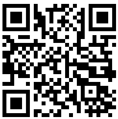

장치를 표면에 평평하게 놓습니다
대부분의 컴퓨터에는 필요한 센서가 없습니다. 모바일 장치에서 계속하려면 QR 코드를 스캔하십시오.

이 온라인 경사계를 사용하여 각도를 측정하는 방법
이 온라인 경사계는 스마트폰이나 태블릿에 이미 내장된 센서를 사용하여 표면 각도(경사, 피치 및 롤)를 고정밀로 측정하도록 설계된 웹 기반 애플리케이션입니다. 소프트웨어 설치 없이 장치를 강력한 디지털 수평계, 기포 수평계 또는 경사계로 무료로 변환합니다. 모든 것이 웹 브라우저에서 직접 실행되므로 어디서나 쉽게 각도와 경사를 측정할 수 있습니다. 각도 측정, 경사 측정 또는 피치 및 롤 확인을 위한 신뢰할 수 있는 도구로 사용하십시오.
핵심 기능
- 실시간 각도 측정: 센서 액세스를 허용하고 시작을 누르면 애플리케이션이 장치의 가속도계와 자이로스코프에서 데이터를 읽어 실시간으로 피치(X축)와 롤(Y축) 각도를 계산합니다. 이를 통해 즉각적인 각도 및 경사 측정이 가능합니다.
- 고정밀 기포 수평계: 중앙 그래픽 인터페이스에는 장치의 기울기에 따라 움직이는 가상 기포가 있어 완벽한 수평을 이루기 위한 직관적인 시각적 가이드를 제공합니다. 브라우저에서 사용할 수 있는 무료 경사계입니다.
- 영점 보정: 영점 버튼을 사용하면 모든 표면을 기준점(0도)으로 설정할 수 있습니다. 이는 절대 수평이 아닌 다른 표면에 대한 한 표면의 각도를 측정하는 데 유용합니다. 브라우저 도구의 모든 각도에 완벽한 기능입니다. 튀어나온 카메라와 같은 모바일 장치의 돌출부를 조정하는 데에도 사용할 수 있습니다.
- 시각 없는 수평 조절: 설정에서 오디오 피드백을 활성화하면 완벽한 수평이 이루어질 때 장치에서 신호음이 울려 화면을 계속 모니터링하지 않고도 표면을 수평으로 만들 수 있습니다.
면책 조항: 정확성 이해
이 도구는 경사를 측정하는 편리한 방법을 제공하지만 일반적인 스마트폰의 센서는 계측 등급의 각도 측정용으로 설계되지 않았다는 점에 유의하십시오. 센서 품질, 장치 보정, 심지어 휴대폰 케이스의 작은 돌출부와 같은 요인이 오차를 유발할 수 있습니다. 많은 DIY 및 취미 애호가 작업의 경우 정확도는 충분 이상입니다. 그러나 인증된 정밀도가 필요한 전문적인 응용 분야의 경우 전용 보정된 수평계를 사용하는 것이 좋습니다. 이 도구는 대부분의 일상적인 요구에 대해 신뢰할 수 있는 각도 측정을 제공합니다.
측정 정확도 향상 방법
간단한 2단계 보정 방법을 사용하여 경사 측정의 정확도를 크게 향상시키고 센서 바이어스를 보정할 수 있습니다. 이 프로세스는 더 나은 정밀도로 각도를 측정해야 할 때 휴대폰의 고유한 영점 오프셋 오류 대부분을 효과적으로 제거합니다.
- 첫 번째 측정: 측정하려는 표면에 휴대폰을 놓고 각도 판독값을 기록합니다(예: 8°).
- 두 번째 측정: 들어 올리지 않고 휴대폰을 같은 지점에서 정확히 180° 회전시킨 다음(원래 위치와 "정면으로" 마주보도록) 두 번째 판독값을 취합니다(예: 10°).
- 실제 각도 계산: 실제 각도는 이 두 측정값의 평균입니다. 예: (8 + 10) / 2 = 9°. 이것이 브라우저에서 더 정확한 경사입니다.
180° 회전 방법을 사용하여 센서 오류를 제거하고 더 정확한 각도 측정을 달성하십시오.
"영점" 보정 수행 방법
영점 보정을 사용하면 현재 표면을 새로운 기준점(0도)으로 설정할 수 있으며, 이는 상대 각도를 측정하거나 고르지 않은 표면을 보정하는 데 필수적입니다. 방법은 다음과 같습니다.
- 장치 놓기: 스마트폰이나 태블릿을 0° 기준으로 지정하려는 표면에 단단히 놓습니다.
- 안정화: 장치가 안정적이고 움직이지 않는지 확인합니다.
- 보정하려면 영점을 누르십시오: 경사계 인터페이스에서 영점 버튼을 누릅니다.
- 새 기준선: 현재 피치 및 롤 판독값이 즉시 0°로 재설정되어 이 방향이 모든 후속 측정의 새로운 기준선으로 설정됩니다.
영점 보정은 현재 표면을 0° 기준으로 설정하여 상대 각도 측정을 가능하게 합니다.
돌출된 카메라 조정
최신 스마트폰에는 종종 카메라 돌출부가 있어 완전히 평평하게 놓는 것을 방해합니다. 이는 정확한 측정에 방해가 될 수 있지만 아래 그림과 같이 영점 버튼을 사용하여 쉽게 수정할 수 있습니다.
- 놓고 관찰: 휴대폰을 표면에 놓습니다. 카메라 돌출부가 약간의 안정적인 기울기를 만들어 0이 아닌 판독값을 표시하는 것을 확인합니다.
- 영점 누르기: 영점 버튼을 누릅니다. 그러면 경사계가 휴대폰의 현재 기울어진 위치를 새로운 "0°" 기준점으로 처리하도록 지시합니다.
- 정확하게 측정: 이제 디스플레이에 0°가 표시됩니다. 카메라 돌출부의 효과가 상쇄되어 표면에 대한 정확한 측정을 할 수 있습니다.
카메라 돌출부로 인한 기울기를 보정하려면 "영점"을 사용하십시오.
경사계의 상세한 사용 사례
이 브라우저 기반 경사계는 여러 작업에서 피치와 롤을 측정하는 다용도 도구입니다.
- 건설 및 목공: 이 경사계를 사용하여 벽이 완벽하게 수직이고 바닥이 수평인지 확인합니다. 지붕을 틀 때 피치를 측정하여 서까래가 올바른 각도로 절단되고 설치되었는지 확인합니다. 파티오나 통로의 배수를 위한 적절한 경사를 설정하는 데도 좋습니다.
- 태양 전지판 설치: 에너지 생성을 극대화하려면 위도와 계절에 따라 태양 전지판을 최적의 기울기 각도로 설정해야 합니다. 이 도구를 사용하여 설치 중에 피치를 정확하게 측정하여 패널이 최고의 효율을 위해 태양에 대해 올바른 방향을 향하도록 합니다.
- DIY 및 주택 개량: 매번 액자를 완벽하게 똑바로 겁니다. 가구를 조립하거나 주방 캐비닛을 설치할 때 경사계를 사용하여 모든 것이 수평인지 확인합니다. 또한 불균형과 진동을 방지하기 위해 세탁기와 같은 가전제품을 설치할 때 경사를 측정하는 데 완벽한 도구입니다.
- 사진 및 비디오 촬영: 이 도구를 사용하여 삼각대에서 카메라를 수평으로 만들어 기울어진 수평선을 피하십시오. 이것은 전문적인 결과를 위해 직선이 필수적인 풍경, 건축 및 파노라마 사진에서 특히 중요합니다.
- 차량 및 RV 레벨링: 차량의 서스펜션을 수정한 후 드라이브라인 각도를 확인합니다. 캠핑할 때 편안함을 위해 캐러밴이나 RV를 수평으로 만들고 가전제품(예: 냉장고)이 올바르게 작동하는지 확인하는 데 사용합니다. 모든 차량 설정에 유용한 경사 측정 도구입니다.
- 배관 및 배수: 배수관을 설치할 때 적절한 흐름을 위해서는 일관되고 완만한 경사가 중요합니다. 이 온라인 경사계를 사용하여 각도를 정확하게 측정하고 향후 막힘이나 고인 물 문제를 예방하십시오.
자주 묻는 질문
센서 액세스를 허용하고 '측정 시작'을 누른 다음 장치를 표면에 놓습니다. 경사계는 피치(X축)와 롤(Y축) 각도를 실시간으로 표시합니다. 기준점을 설정하려면 '영점' 버튼을 사용하세요.
정확도는 장치의 가속도계 품질에 따라 다릅니다. DIY 및 취미 작업에는 매우 정확합니다. 전문적인 계측 등급의 정밀도를 위해서는 전용 보정된 수평계를 권장합니다. 정확도를 높이려면 180° 회전 보정 방법을 사용하세요.
예, 모든 센서 데이터는 브라우저에서 장치에서 직접 처리됩니다. 당사 서버로 정보가 전송되지 않습니다. 측정값은 완전히 비공개입니다.
태양 전지판 설치, 건설, 목공, DIY 프로젝트, 사진 촬영, 차량 수평 조절, 배관 및 각도 또는 경사 측정이 필요한 모든 작업에 사용할 수 있습니다.
카메라 돌출부가 있는 상태로 휴대폰을 표면에 놓고 판독값을 기록한 다음 '영점' 버튼을 누릅니다. 이렇게 하면 카메라 돌출부 효과가 보정되어 정확한 측정이 가능합니다.
100% 비공개 및 보안
당사는 귀하의 개인 정보를 보호하기 위해 최선을 다하고 있습니다. 모든 센서 데이터는 브라우저에 의해 장치에서 직접 처리됩니다. 당사 서버에는 어떠한 정보도 전송되지 않습니다. 귀하의 측정값은 귀하의 것입니다.